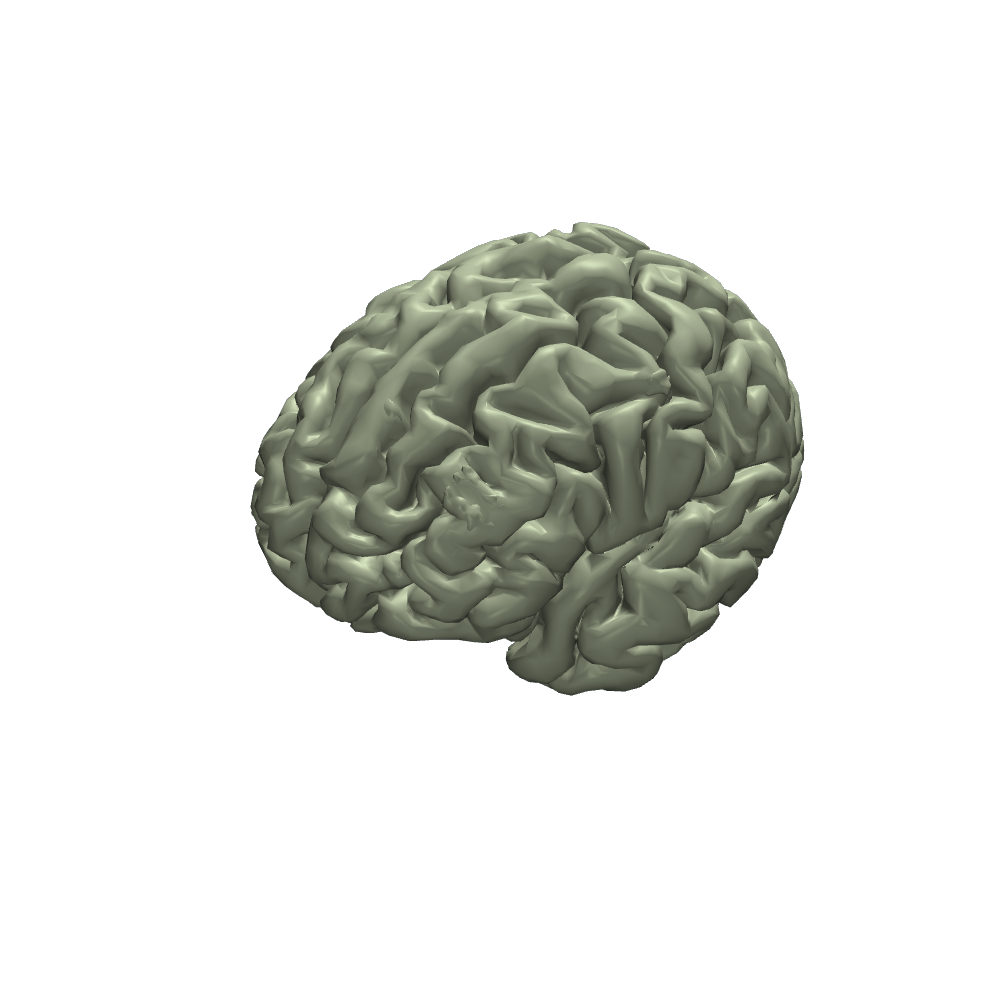

Figure 08 / dissertation↗ expand
Molds and fabrication
Mold and processing approaches used across the anatomically modeled platforms.
Imaging-derived human anatomy, conductive material geometry and sensor integration.
Human models require careful attention to gyral and sulcal geometry, mold venting, sacrificial tooling, and sensor access. The dissertation describes MRI segmentation using FreeSurfer/SPM and CAD refinement for fabrication.
Workflow
MRI / CT → segmentation → mesh cleanup → CAD → molds, tooling and sensor interfaces.
Separate surface meshes for the outer head, skull, CSF and brain. Switch layers to examine how anatomical interfaces define the physical and electrical design space.

A focused surface viewer for the original Brain.stl geometry. The model can be rotated or displayed as a wireframe.
Mold and processing approaches used across the anatomically modeled platforms.
CAD layout for the instrumentation housing and interlocking modules.